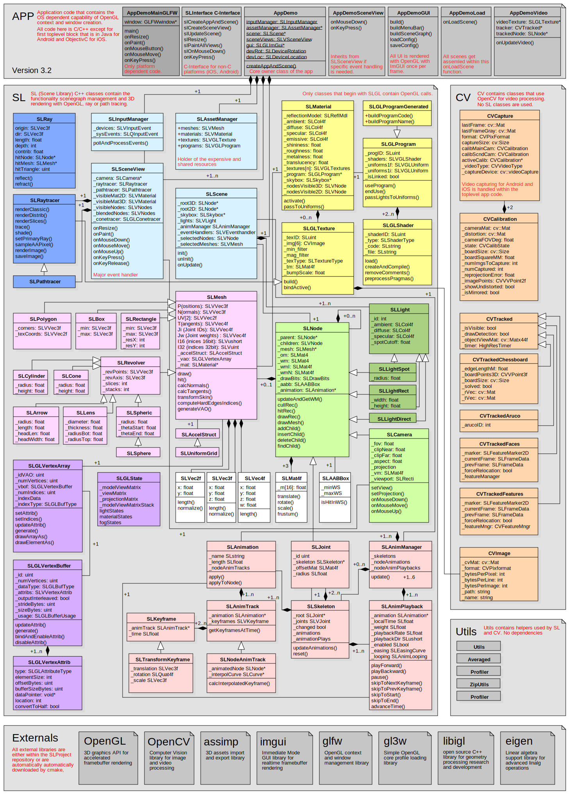

Class Diagram
The following class diagram gives you an overview of the major classes with of its important variables and methods:
-
The gray boxes are the application side that depends on the OS and the GUI tool-kit.
-
The blue classes form the centre with the SLInputManager, SLScene and SLSceneView class.
-
The yellow classes define the materials that are responsible for the visual appearances of the mesh objects.
-
The green classes build the scenegraph that defines the spacial structure of the visible objects.
-
The pink classes define a single triangulated mesh object.
-
The violet classes encapsulate all OpenGL vertex array object and buffer objects.
-
The red classes build the animation framework.
-
The orange classes encapsulate the image processing functionality using OpenCV.

Application Code
The applications starting code (gray boxes in the class diagram below) depends on the operating system In all cases we have the most outer shell of the application that handles the window and the OpenGL context creation and passes events to a thin C-function interface before it is handled by the C++-framework in the library lib-SLProject. The following OS' are supported and applications are provided for demonstration:
-
Windows, Linux and Max OSX applications can use the GLFW C-library for the platform independent window and context creation. GLFW is included in the SLProject repository. See the app-Demo-GLFW for demonstration.
-
Windows, Linux and Max OSX applications can also use the Qt C++-library for the window and context creation. Qt has to be downloaded and installed additionally. See the app-Demo-Qt for demonstration.
-
The Android application starts in JAVA and passes the events with JNI (Java Native Interface) to the C-interface. See the wiki for build instructions and the app-Demo-Android for demonstration.
-
On Apple iOS Devices the application starts in ObjectiveC before it passes the events to the C-interface. See the wiki for build instructions and the app-Demo-iOS for demonstration.
-
You could in fact use any GUI library on any OS that can create OpenGL contexts. Other alternatives could be e.g. freeglut, FLTK, wxWidgets, Nana or Juce
Central Classes
The blue classes form the center of the SLProject framework:
-
SLInterface.h and SLInterface.cpp define the C-Interface of the SLProject library. We use a C-interface because this type can be called from any higher level language. The SLInterface talks only to the SLScene and SLSceneView classes.
-
SLInputManager collects all user events from the mouse and keyboard as well as from additional input devices such as a LeapMotion or Kinect sensor.
-
SLScene is the top-level class of the framework that represents the scene with its properties. The scene content is created in SLScene::onLoad. It also holds one or more pointers to SLSceneView instances.
-
SLSceneView represents a dynamic real time 3D view onto the scene. A scene can be shown in multiple sceneviews as demonstrated in the app-Viewer-Qt application. A sceneview receives all events (keyboard, mouse etc.) from the GUI via the SLInputManager.
Scenegraph Classes
SLNode is the major building block for the the scenegraph structure (green classes) and can have 0-N children nodes and 0-N triangle meshes. A node can be transformed (translated, rotated and scaled) in 3D-space.
-
SLLightSphere and SLLightRect are from SLNode derived and define lights that can be placed and directed in space.
-
SLCamera that defines the view to the scene.
Mesh Classes
SLMesh is the base class for triangulated or wire framed meshes (pink classes). A mesh is rendered with a material defined in SLMaterial. A mesh has all the vertex attributes such as position, normals, texture coordinates. The triangles are defined by indexes into the vertex attribute arrays. A mesh has an instance of SLGLVertexArray that does all the OpenGL drawing. This vertex array object (VAO) stores all attributes in either a float or half float vertex attribute buffer (SLGLVertexBuffer) that is generated in the memory of the GPU. The attribute data on the client side is not deleted because it is used for ray tracing.
VertexArray Classes
SLGLVertexArray and SLGLVertexBuffer encapsulate all OpenGL buffer stuff and provides the core drawing functionality with OpenGL.
Material Classes
SLMaterial is the core of the yellow classes that define the appearance of a mesh. A material can have one or more texture images and is rendered with a specific shader program written in the OpenGL shading language (GLSL).
Animation Classes
The red animation classes provide the functionality for simple node animations or skeletal animations.
-
SLAnimManager: A single instance of this class is held by the SLScene instance and is responsible for updating the enabled animations and to manage their life time. It keeps a list of all skeletons and node animations and also holds a list of all animation playback controllers. The update of all animations is done before the rendering of all SLSceneView instances.
-
SLAnimPlayback manages the playback state and the local time of an SLAnimation. It manages the way the time advances and how the animation loops. It has all functionality to play, pause, stop, enable, speed up and slow down a playback. A list of all SLAnimPlayback instances is held by the SLAnimManager.
-
SLAnimation is a container for multiple SLAnimTrack that build an animation. E.g. a walk animation would consist of all the SLAnimTrack that make a SLSkeleton walk. It also knows the length of the animation.
-
SLAnimTrack and SLNodeAnimTrack: An animation track is a track that affects a single SLNode or an SLJoint of an SLSkeleton by interpolating its transform. It holds therefore a list of SLKeyframe. For a smooth motion it can interpolate the transform at a given time between two neighboring SLKeyframe.
-
SLKeyframe and SLTransformKeyframe define a transform at a certain time on an SLAnimTrack.
-
SLSkeleton: A skeleton is used to animate a hierarchical object like a human figure. An SLSkeleton keeps track of its bones (SLJoints) in a tree structure and points with _root to the root node of the skeleton hierarchy. An SLSkeleton is not actively transforming any SLNode in the scene graph. It just keeps track of its transformed SLJoint. A mesh that is associated with a skeleton transforms all its vertices every frame by the joint weights (Jw). Every vertex of a mesh has weights for up to four joints by which it can be influenced.
-
SLJoint is a specialized SLNode that represents a single joint (or bone) in a skeleton The main addition of SLJoint to the base SLNode is the offset matrix which is the inverse transformation of the joint's binding pose in mesh space. It is used to transform the vertices of a rigged SLMesh to the origin of the joint to be able to manipulate them in the joint's local space.
Image Processing Classes
The orange classes provide the functionality for image processing using the OpenCV framework. The SLProject framework can now process the images from attached live video cameras. This works via OpenCV on desktop OS as well as on iOS and Android. The live video image is constantly fed into and OpenGL texture that can be used as a texture on an objects material or as the scenes background. With the live video in the background you can create Augmented Reality applications. Examples can be found in the demo application under Load Scene > Using Video > Track Chessboard or Calibrate Camera.
-
SLCVImage: Replaces the deprecated SLImage class and provides all for loading, saving and converting images. Internally it stores the image in a cv::Mat instance.
-
SLCVCapture: Holds static images from the OpenCV video capture or from an external (iOS and Android) video capture service. There is a SLCVCapture::_lastFrame and a SLCVCapture::_lastFrameGray with the gray level version of the last capture video frame.
-
SLCVCalibration holds all functionality to calibrate the video camera. A classic chessboard pattern is used for calibration. In the demo application a special scene is provided for the calibration (Load Scene > Using Video > Track Chessboard or Calibrate Camera).
-
SLCVTracker is the base class for tracking classes. The scene can have multiple trackers. A tracker is associated with a Node. When the object to be tracked is found, it controls the nodes transform. If the associated node is the scenes active camera a classic augmented reality application can be generated.
-
SLCVTrackerChessboard tracks the same chessboard that is used for the camera calibration.
-
SLCVTrackerAruco tracks special markers called AruCo markers. These markers are optimal in tracking performance and stability.
Authors: marcu.nosp@m.s.hu.nosp@m.drits.nosp@m.ch@b.nosp@m.fh.ch
Date: February 2017
Copyright (c): 2002-2017 Marcus Hudritsch, Kirchrain 18, 2572 Sutz, Switzerland

 1.8.2
1.8.2